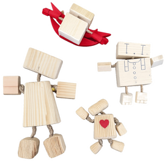
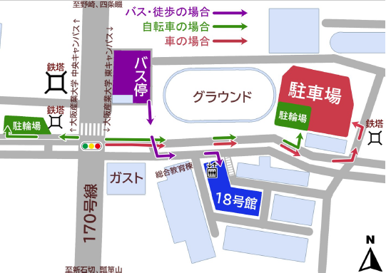

ものづくり教室とは？
ものづくり教室は、地域の子どもたちに楽しくものづくりを学んで
いただくことを目的として開催しております。
プロジェクトの学生が、子どもたちが楽しく学べるようなものづくりの案を出し合い考え、
試行錯誤をかさね、楽しんでいただけるものを提供いたします。
地域の子どもたちを大阪産業大学に招き、大学生が子どもたちにものづくりの楽しさを伝え、体験していただく場です。
今回の開催内容
2026年度 夏のものづくり教室
工作内容

木製ストラップ
開催日時
7/18(土)
午前の部 10：00 ～ 11：30
午後の部 13：30 ～ 15：00
いずれか1部のみ参加可能
開催場所
大阪産業大学 東キャンパス 18号館
午前の部 18号館 18604号室
午後の部 18号館 18504号室

画像をタップするとPDFが開きます。
対象者
小学生
定員
午前の部 ： 45名
午後の部 ： 45名
応募期間
5/8(金) 12：00 ～ 6/17(水) 12：00
当選発表日
6/18(木)
注意事項
・当選発表は当選された方のみにメールを送信させていただきます。
・応募者が定員を超えた場合抽選にて決定させていただきます。
・迷惑メールを設定されている場合は、ドメイン「@yahoo.co.jp」を
指定受信設定にしてください。
・必ず保護者の同意を得てご応募してください
・小学生の参加は送迎が必須です。
送迎可能な方のみお申し込みください。
・当日の様子を撮影しホームページ等に記載させて頂きますので
あらかじめご了承ください。
その他不明な点がございましたら、
お気軽にお問い合わせください。
お問い合わせはメールからお願いします